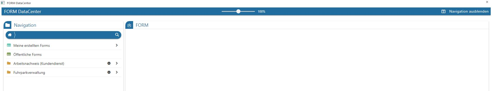
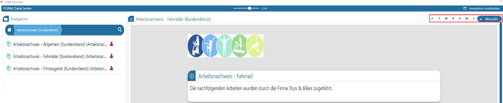
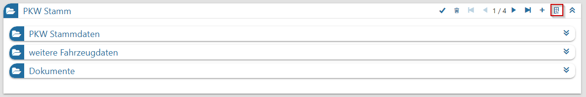

Das DataCenter kann im Programm WinLine INFO unter…
1 SMART
1 FORM
1 DataCenter
… aufgerufen werden.

Beim Öffnen des DataCenter stehen im linken Bereich der "Navigation" die selbst erstellten, öffentlichen bzw. mittels Ordner-Struktur freigegebenen FORM-Formulare für Erfassungen zur Verfügung.
Wenn der Eintrag "Meine erstellten Forms" angeklickt wird, landet man in der nächsten Ebene, welche alle für diesen Benutzer selbst erstellten FORM-Formulare anzeigt.
Bei Anwahl eines vorhandenen FORM-Formulars wird diese im rechten Bereich geladen, angezeigt und kann in weiterer Folge ausgefüllt werden.
Über die Möglichkeit "Navigation ausblenden" ist es möglich die sich im linken Bereich befindliche Navigation auszuschalten. Damit befindet sich allein die FORM zur Bearbeitung im Fenster. Über den Button "Navigation einschalten" kann die Navigation wieder bereitgestellt werden.
Das oben mittig befindliche Zoom verändert die Arbeitsgröße der FORM.
Bereits bestehende Erfassungen innerhalb des geladenen Formulars können mit den VCR-Buttons rechts oben im ausgewählten FORM geladen werden.
Neuer Erfassungen werden mit dem + (Plus-Symbol) in der Navigationsleiste begonnen und mit dem Speicherhaken darin abgespeichert.
Soll ein Eintrag in der Datenquelle gelöscht werden, so wird nach Auswahl des Eintrags der Löschbutton (Papierkorb-Symbol) aktiviert.
Wenn im ausgewählten FORM-Formular via "FORM Designer" eine Fragestellung für die MesoAI hinterlegt ist, dann kann mittels Buttons "MesoAI" die künstliche Intelligenz angestoßen werden. Diese Felder werden mit dem Ergebnis der MesoAI befüllt.

Nach erfolgreicher Speicherung ist die dementsprechende Meldung ersichtlich:
Werden Erfassungen in einer Multi FORM vorgenommen so über das Icon "Formular" / "Tabelle" die Bearbeitung / Ansicht (Suche) durchgeführt werden.

Hinweis
Ob ein FORM-Formular mehrmals ausgefüllt bzw. ein bestehender Datensatz bearbeitet/gelöscht werden kann, muss innerhalb des FORM-Designers im betroffenen Formular - in den FORM-Einstellungen - hinterlegt werden.
Weitere Details zu den einzelnen Elementen können im Bereich der Elemente im FORM-Designer entnommen werden.